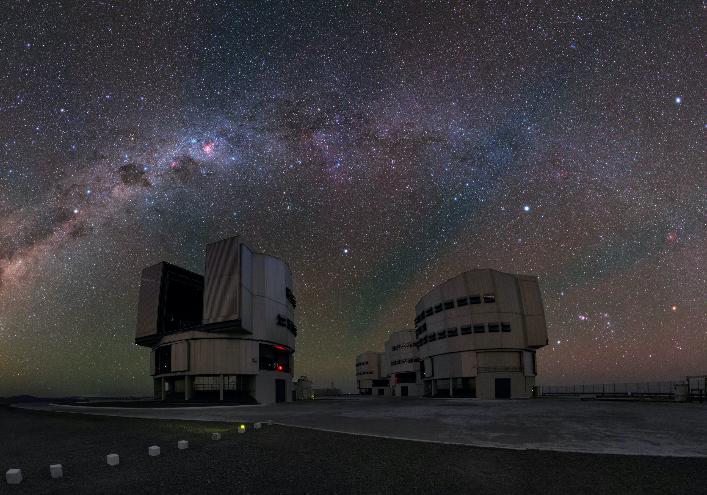

HUBBLE'S LEGACY
Story of Hubble
Colouring the Universe
Astronomical Observatories

Astronomical Observatories
Made for the
Royal Society Summer Science Exhibition
2021
Optics:
diffraction
Some text.
se the sliders to control both the
telescope resolution
Original
Result
Atmosphere
Telescope Resolution
Pixel Scale
Sensitivity